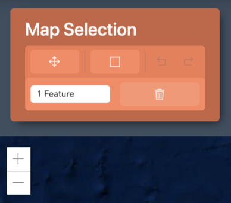

To Select any particular from user needs to fulfil required criterias.First of all, there is a transform clickable option(symbolic like a cross) just under the "map selectio" tab to move towards user desire geographical postion at the given world map.Secondly, to select any pariticualr area from that postion user needs to choose "draw a ractangular" option which is situated just after the transfrom option.If any user failed to find or select desired area user can rectify that by clicking undo options which are situated right after the draw a ractangular option.Finally to zoom in or zoom out the map user can use the "zoom in and zoom out" option wich is situated just beneath the map selection tab(symbolic like plus and minus sign').

Although user can zoom in and zoom out by scrollng mouse.Also, user can delete the feature if the user is unsatisfied with the selected area.
